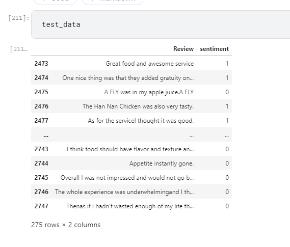

Naive Bayes Classifier
Github
Introduction
Naive Bayes methods are a set of supervised learning algorithms based on applying Bayes’ theorem with the “naive” assumption of conditional independence between every pair of features given the value of the class variable.
- 1. Imports.
-
- 2. Reading Datasets Amazon, Yelp, Kaggle.
- 3. Cleaning the dataset.

- 4. Positive sentiments vs Negative sentiments graph.
- 5. Split data into train, test and dev.
- 
- 6. Build Vocabulary
- 7. Probability of the occurrence of the words.
- 8. Calculate accuracy using dev dataset.
- 9. Conduct five fold cross validation.
- 10. Compare the effect of Smoothing.
- 11. Derive Top 10 words that predicts positive and negative class.
- 12. Final Accuracy.
- I could achieve an accuracy of 73.81%

- Graphs
- We can see from the above graphs that the positive and negative reviews are almost the same.
- Challenges
- I faced a challenges in computing the probability values and accuracies which I could overcome with the help of a few references.
- References
- https://www.karanr.dev/blog/2020/naive_bayes_large_movie_reviews/naive_bayes_large_movie_reviews/
- https://cs230.stanford.edu/blog/split/
- https://levelup.gitconnected.com/movie-review-sentiment-analysis-with-naive-bayes-machine-learning-from-scratch-part-v-7bb869391bab
- https://satyam-kumar.medium.com/imdb-movie-review-polarity-using-naive-bayes-classifier-9f92c13efa2d
- https://scikit-learn.org/stable/modules/naive_bayes.html